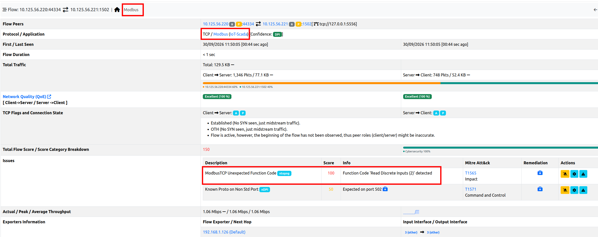
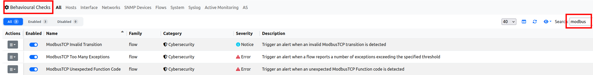
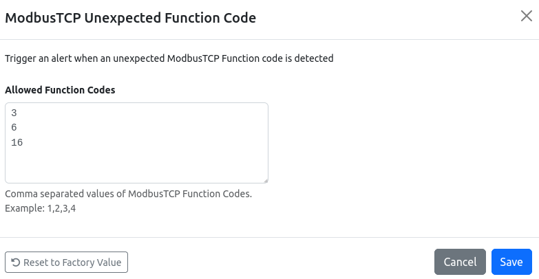
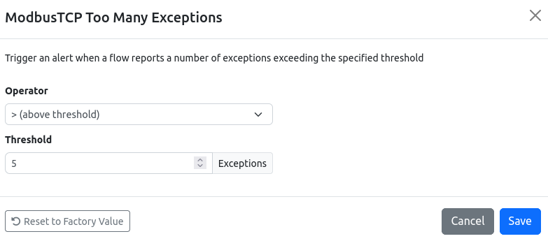
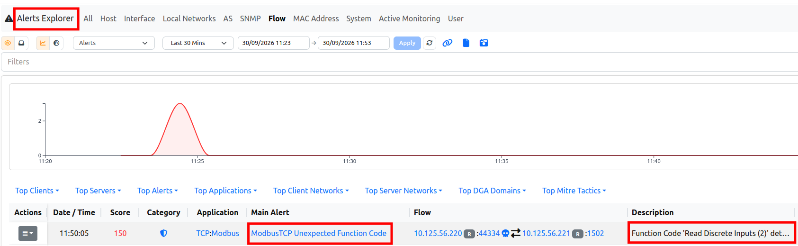

1. МодбусTCP
Примечание
Эта функция доступна только в лицензии Enterprise L.
МодбусTCP представляет собой вариант Modbus протокол, используемый для связи через TCP/IP. Он широко используется в HMI, системах SCADA и инженерных станциях для чтения и записи данных (обмоток, дискретных входов, входных и регистров хранения) ПЛК и других полевых устройств. Порт по умолчанию — TCP 502; ntopng обнаруживает трафик Modbus также на порту TCP 1502.
Для каждого потока Modbus ntopng отслеживает используемые коды функций, переходы между ними, регистры, к которым осуществляется доступ, и исключения. ntopng отображает эту информацию в деталях потока, сохраняет ее вместе с потоком и использует для обнаружения непредвиденного поведения.
1.1. Информация о потоке
Modbus потоки отображаются в списке потоков с пометкой TCP:Modbus протокол приложения. При открытии сведений о потоке Modbus в обзоре потока отображается протокол, а на верхней панели отображается дополнительная информация. Modbus вкладка. Проблемы в разделе перечислены оповещения, инициированные потоком (см. Поведенческие проверки ниже).


Modbus Обзор потока
Modbus Вкладка содержит информацию Modbus о потоке:

Modbus Детали потока
График переходов (вверху слева): каждый узел — это код функции, используемый в потоке, а каждая стрелка — это переход от кода функции к следующему. Чем больше переходов, тем толще стрелка. Циклы на одном и том же узле означают, что последовательные сообщения имеют один и тот же код функции (например, запрос и его ответ или один и тот же запрос, повторяемый с течением времени с помощью опросного HMI). График можно увеличивать/уменьшать с помощью колеса мыши и перемещать, перетаскивая его.
Краткое содержание (вверху справа): количество Исключения сообщается о потоке и количестве отдельных Регистры, Функциональные коды и Переходы заметил.
Функциональные коды (внизу слева): список кодов функций, используемых в потоке, с указанием количества раз (Использование) каждый из них был использован.
Регистры (внизу справа): список регистров, к которым осуществляется доступ в потоке, с указанием количества раз (Использование) к каждому из них был осуществлен доступ. Сообщаются только адреса регистров, а не считанные или записанные значения.
Исключение Modbus — это ответ, посредством которого устройство сообщает, что оно не может выполнить запрос (например, потому что запрошенная функция или адрес не поддерживается).
Коды функций сообщаются с их именем и числовым (десятичным) значением, например. Read Coils (1). Это функциональные коды, известные как ntopng; другие коды сообщаются как Unknown (<code>).
Код |
Имя |
Описание |
|---|---|---|
1 |
Читать катушки |
Чтение состояния катушек (дискретных выходов) |
2 |
Чтение дискретных входов |
Чтение состояния дискретных входов |
3 |
Чтение регистров хранения |
Чтение регистров временного хранения |
4 |
Чтение входных регистров |
Чтение входных регистров |
5 |
Запись сингла |
Запись одной катушки |
6 |
Запись единого регистра |
Запись единого регистра временного хранения |
7 |
Чтение статуса исключения |
Чтение статуса исключения устройства |
8 |
Диагностика |
Функции диагностики (например, тесты связи, сброс счетчиков) |
11 |
Получить связь. Счетчики событий |
Чтение счетчика событий связи |
12 |
Получить связь. Журнал событий |
Чтение журнала событий связи |
15 |
Запись нескольких катушек |
Запись нескольких катушек |
16 |
Запись нескольких регистров |
Запись нескольких регистров временного хранения |
17 |
Сообщить идентификатор подчиненного устройства |
Чтение идентификации и статуса устройства |
20 |
Чтение файловой записи |
Чтение файловых записей |
21 |
Запись файловой записи |
Запись файловых записей |
22 |
Регистр записи маски |
Модификация регистра временного хранения с помощью масок И/ИЛИ |
23 |
Чтение записи Регистрация |
Запись и чтение нескольких регистров за одну транзакцию |
24 |
Чтение очереди FIFO |
Чтение очереди регистров FIFO. |
43 |
Инкап. Транспортный интерфейс |
Инкапсулированный интерфейс (например, считывание идентификации устройства) |
90 |
Единство (Шнайдер) |
Собственная функция Schneider Electric, используемая, например. с помощью программного обеспечения |
100 |
Рассеянный холдинговый рег. Читать |
Собственная функция для чтения несмежных регистров временного хранения. |
В приведенном выше примере HMI опрашивает устройство, считывая его дискретные входы, входные регистры и обмотки (Read Discrete Inputs, Read Input Registers, Read Coils), и изредка записывает катушку (Write Single Coil).
Информация Modbus также доступна для исторических потоков, когда потоки сбрасываются до ClickHouse (см. Исторические потоки): данные исторического потока сообщают то же самое Modbus вкладка.
Наконец, сервер потока Modbus (т. е. ПЛК или полевое устройство) помечается значком Modbus Сервер тег (см. Теги). Тег можно использовать, например, для вывода списка всех устройств Modbus в Хозяева странице, выбрав Modbus Сервер в Теги фильтр:

Modbus Тег сервера
1.2. Поведенческие проверки
Информация Modbus используется тремя проверками поведения потока, доступными в Настройки → Поведенческие проверки (тип modbus в поле поиска, чтобы перечислить их). По умолчанию все они отключены.


Modbus Поведенческие проверки
1.2.1. Конфигурация
Каждая проверка включается соответствующим переключателем и настраивается нажатием кнопки действий.
1.2.1.1. Неожиданный функциональный код ModbusTCP
Вызывает оповещение, когда поток использует код функции, которого нет в списке разрешенных кодов функций. Предупреждение срабатывает при первом использовании кода функции в потоке. Коды необходимо указывать в виде десятичных значений (шестнадцатеричные значения не поддерживаются), по одному в строке или через запятую.


Конфигурация непредвиденного функционального кода ModbusTCP
По умолчанию разрешенные коды функций: 3 (Читать регистры хранения), 6 (Запись единого регистра) и 16 (Запись нескольких регистров). Список должен быть адаптирован к сети, допуская коды функций, обычно используемые ее HMI и системами SCADA; например:
В приведенном выше примере HMI также считывает катушки, дискретные входы и входные регистры и записывает катушки: разрешая только коды по умолчанию, при этом срабатывает предупреждение.
Read Discrete Inputs (2). Чтобы считать этот трафик легитимным, разрешите:1,2,3,4,5,6,15,16.В сети, где устройства доступны только для чтения (например, с помощью системы мониторинга), разрешайте только чтение функциональных кодов, чтобы сообщалось о любой записи:
1,2,3,4.
Функциональные коды, такие как 8 (Диагностика) или 90 (Unity, используемое программным обеспечением Schneider Electric) обычно не являются частью обычных операций и о них стоит сообщать.
Обратите внимание, что любой код функции, отсутствующий в списке (включая те, которые неизвестны ntopng), вызывает предупреждение.
1.2.1.2. ModbusTCP слишком много исключений
Вызывает оповещение, когда количество исключений, о которых сообщается для потока, достигает настроенного порога (по умолчанию: 5 исключений). Многие исключения могут указывать на неправильную конфигурацию, неисправность или на то, что устройство проверяется кем-то (например, сканирование поддерживаемых функциональных кодов или действительных адресов).


Конфигурация ModbusTCP слишком много исключений
1.2.1.3. Неверный переход ModbusTCP
Вызывает предупреждение, когда поток сообщает о переходе между двумя функциональными кодами, который никогда раньше не наблюдался в потоке. Для каждого потока ntopng сначала изучает переходы между функциональными кодами для период обучения; как только период обучения закончится, любой новый переход вызывает предупреждение. Период обучения настраивается в Настройки → Предпочтения → OT Протоколы → Период обучения ModbusTCP; значение по умолчанию — 6 часов, минимальное — 1 час.

Период обучения ModbusTCP
1.2.2. Оповещения
Оповещения Modbus — это оповещения потока: о них сообщается в Обозреватель оповещений (под Поток) и в Проблемы раздел сведений о потоке.


Modbus Оповещения
В описании оповещения сообщается подробная информация о событии:
Тревога |
Описание (пример) |
|---|---|
Неожиданный функциональный код ModbusTCP |
|
ModbusTCP слишком много исключений |
|
Неверный переход ModbusTCP |
|